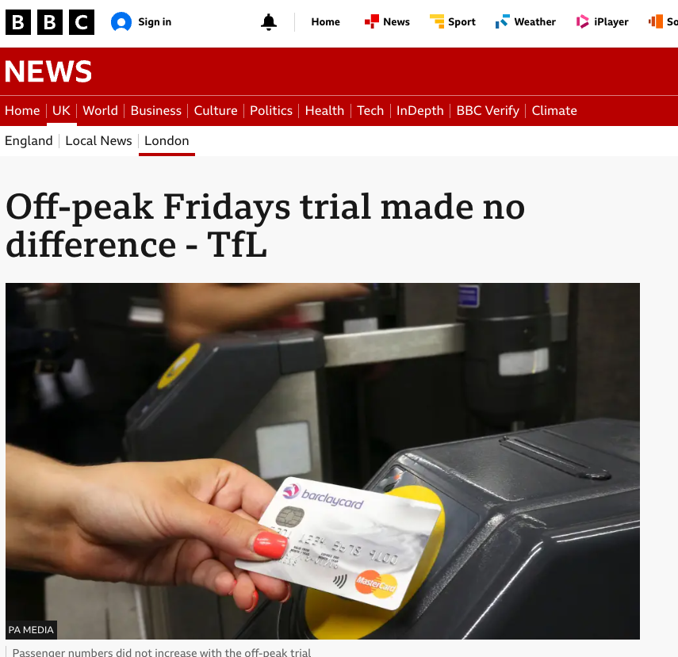
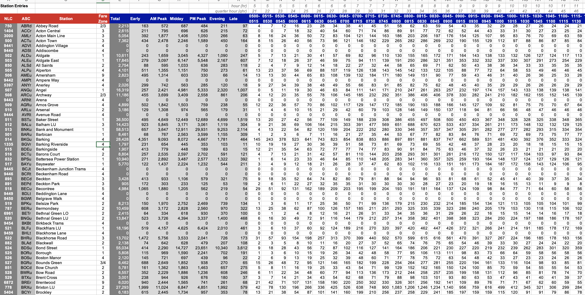
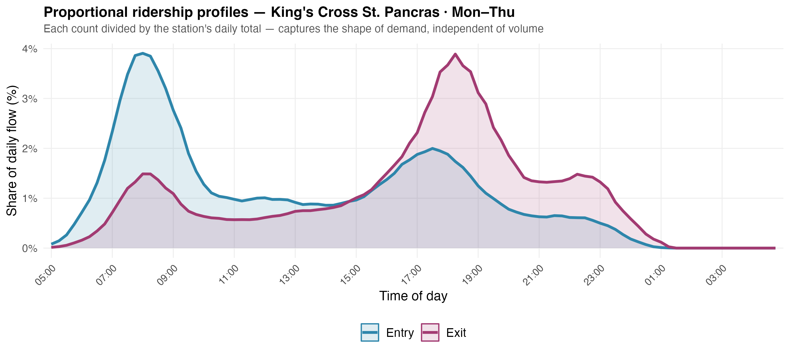
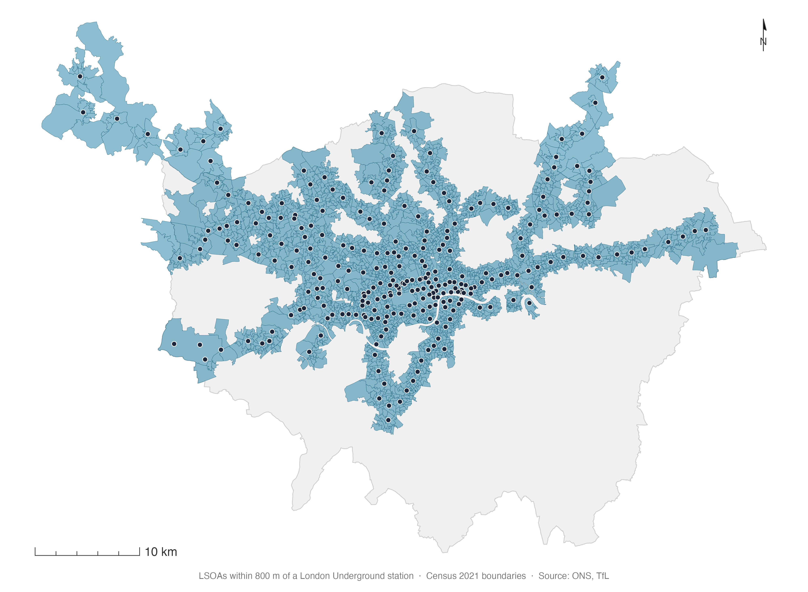
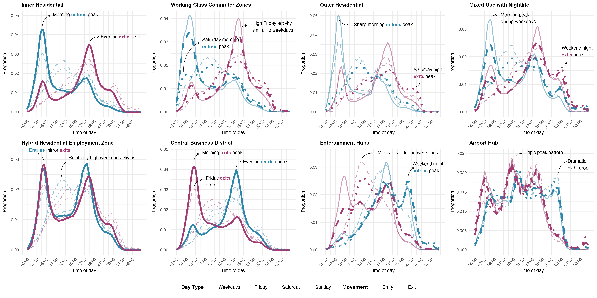
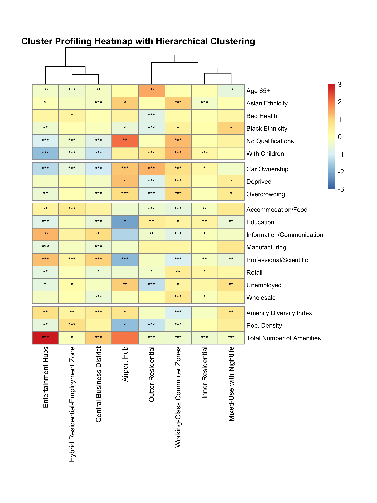

Temporal Ridership Patterns and Socioeconomic Stratification in London’s Underground Stations
17th April 2026
Travel patterns (commuting) are the origin of many transport policies...
...but those patterns are changing.

Are these global trends equally distributed?


But, who is travelling?
We don't know.



We focused on the London Underground network – can be extended to the full TfL network.
We use aggregated patterns, not individual.
Tap ins/tap outs occur at the LU station, but this might be only an intermediate step to get to the final destination.
e: c.peiret-garcia@ucl.ac.uk
w: cpeiretgarcia.github.io
w: citymodellinglab.uk
slides
Clara Peiret-García | CASA, UCL | GISRUK 2026